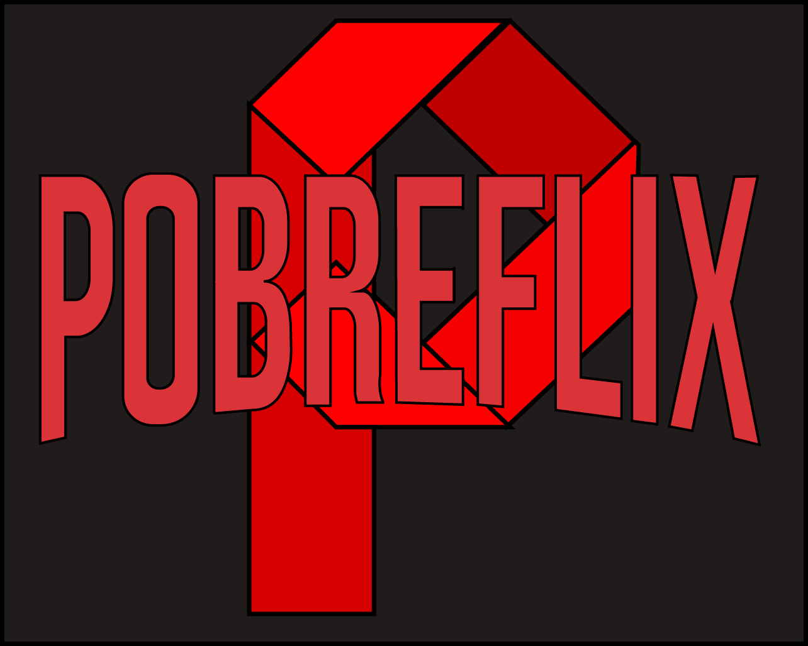

Noticias diarias para sempre te manter informado e por dentro do que acontece nos bastidores do mundo do cinema, como:
Alé de todos esses maravilhosos recursos, preparamos todos os dias uma filme ou série que recomendamos para você. Mostrando a sinopse, elenco, direção e tudo que você precisa saber sobre essa super produção.
A superprodução escolida da vez é a série The Witcher lançada em 2019, uma grande produção exclusiva da NETFLIX. The Witcher se passa em um mundo de fantasia medieval envolvido por magia e segue a história de Geralt de Rívia, estrelado por Henry Cavill, um dos últimos bruxos restantes na Terra. Ele busca encontrar seu lugar em um mundo onde as pessoas muitas vezes são mais perversas que as criaturas selvagens. Para saber mais sobre a obra basta acessar o link abaixo e aproveitar. E claro, depois de assitir a serie usar a #VALEUPOBREFLIX em todas as Redes Sociais.